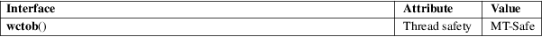

wctob − try to represent a wide character as a single byte
Standard C library (libc, −lc)
#include <wchar.h>
int wctob(wint_t c);
The wctob() function tests whether the multibyte representation of the wide character c, starting in the initial state, consists of a single byte. If so, it is returned as an unsigned char.
Never use this function. It cannot help you in writing internationalized programs. Internationalized programs must never distinguish single-byte and multibyte characters.
The wctob() function returns the single-byte representation of c, if it exists, or EOF otherwise.
For an explanation of the terms used in this section, see attributes(7).

C11, POSIX.1-2008.
POSIX.1-2001, C99.
The behavior of wctob() depends on the LC_CTYPE category of the current locale.
This function should never be used. Internationalized programs must never distinguish single-byte and multibyte characters. Use either wctomb(3) or the thread-safe wcrtomb(3) instead.
btowc(3), wcrtomb(3), wctomb(3)